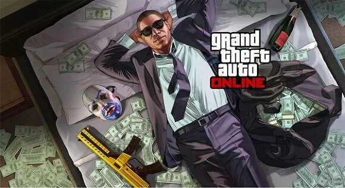

Le Mode En Ligne : C'est quoi ?
Pour les joueurs recherchant une expérience multijoueur sur GTA V en dehors du RolePlay, Rockstar a développé en parallèle du mode histoire un mode Online plus que bien rempli. De simple petit braqueur à cambrioleur professionnel en passant par la gestion de bunkers, bureaux ou même boîte de nuit la vie de Los Santos est bien agitée. Vous pourrez jouez en ligne avec vos amis ou des inconnus et aurez accès à un aspect du jeu tout à fait différent du mode histoire.

Profitez de la liberté du mode de jeu pour faire des hold-up dans les stations service, préparer vos braquages avec vos amis, braquer les fourgons blindés se baladant dans la ville, combattre les gang ennemies. Avec toutes les activités à faire vous êtes sûr de jamais vous ennuyez et de passer du bon temps avec vos amis pendant de longues heures !
Dans ce mode en ligne vous pourrez créer votre propre business tel que le "motor club" en devenant le PDG de votre entreprise. Avec l'argent produite vous pourrez vous achetez des armes, votre villa ou même votre yoatch pour devenir le boss de la session !
